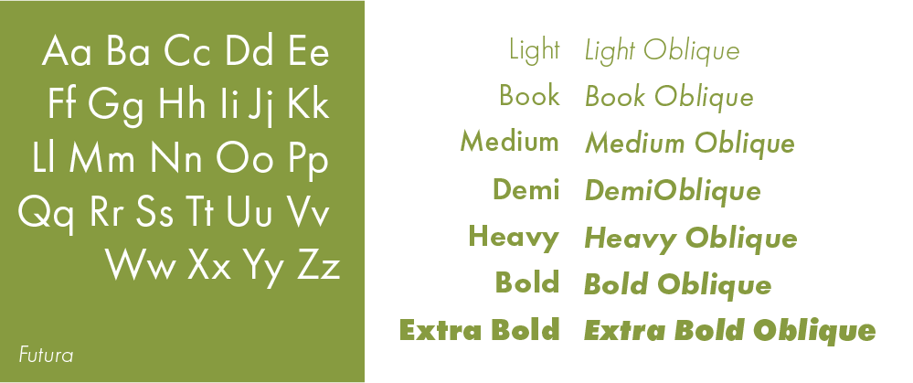

In 1927, Futura, a geometric sans-serif typeface was designed by Paul Renner in Germany in contribution to the New Frankfurt project, which was an affordable modernist housing project. The typeface was based on the geometric Bauhaus design style that had its boom between 1919 and 1933. The Bauhaus ideology was based on simple, modern, and functional geometry. Function over form resulted in a typeface that didn’t include unnecessary ornamental elements. Renner disliked apparently useless things such as abstract art, cinema, and dancing but enjoyed functional art like clean type. His goal was to fuse gothic and roman typefaces and break letters down into basic geometric forms. Unlike other sans-serif typefaces of its time, it had its design based on strokes that were near-even in weight, resulting in low contrast. The lowercase characters have tall ascenders that go over the height of uppercase characters.
Although the debut of Futura was received well globally, it was met with resistance in its native country by the Nazi party because of its more modern type anatomy. The Nazi party preferred traditional blackletter type; however, they would later follow the popular opinion and opt for a cleaner, more readable Roman style typeface. Futura has remained a widely used font since its creation in 1927 due to its timeless legibility. Its simple geometric shapes make it easy to read from a distance, which explains why transportation brands like Mercedes-Benz, Volkswagen, Boeing, and NASA all use Futura on their dashboards. That also explains why it’s used in the brand identity of Crayola, Absolut, and HP, as well as movies by directors Stanley Kubrick and Wes Anderson. Its crowning achievement as a typeface is that it is used on a plaque left on the moon from the Apollo 11 mission, the first ever manned moon landing in 1969. It’s incredible how consistently popular Futura has remained — a true testament to the quality of its design.

Mr Eaves Sans
Mr Eaves Sans is a humanist sans-serif typeface designed by Zuzana Licko, a European-born but California-based graphic designer. It was created alongside its sibling typeface, Mr Eaves Modern. Mr Eaves Modern follows a more geometric sans approach while Mr Eaves Sans follows the original humanist approach that Mrs Eaves did. Both were published through the Emigre Type Library in 2009.
Licko’s career creating typefaces began by creating pixel fonts. A bad experience in a calligraphy class caused her to try her hand at designing text on the brand new Apple Macintosh computer in 1985. According to Licko, the limited capabilities of the low-resolution computer screen and dot matrix printers caused her to have to design something unique. She made a name for herself showcasing her bitmap fonts in the publication Emigre magazine, which she expanded into Emigre Graphics and later Emigre Fonts. Licko began adapting traditional fonts into versions more compatible for on-screen and print use (Mrs Eaves is Licko’s updated Baskerville and Filosofia is based on Bodoni).
One of the main concerns was to avoid creating a typeface that looked like it simply had its serifs cut off. So while it matches Mrs Eaves in weight, color, and armature, Mr Eaves stands as its own typeface with many unique characteristics. Some characters were rebalanced and shortened to add to the sans serif look, but certain characters still retain more flourish than typical sans serif fonts. Overall the font still has the generous letter spacing of Mrs Eaves, which gives it a warm friendly feeling.
Comparison
In general, Futura is larger in type size and x-height than Mr Eaves Sans. When comparing the two fonts side by side, Futura extends above the meanline and capline of Mr Eaves Sans. In general, looking at the angle of how the bowl connects to the stem of certain letters, like ‘p’ and 'd', one can distinguish Futura’s rounder appearance from Mr Eaves Sans’ shorter appearance.
Similarities
The ‘H’ letterforms are very similar; however, Futura’s ‘H’ has taller stems and its crossbar sits a bit higher than Mr Eaves Sans’.Although Futura and Mr Eaves Sans’ ‘L’ character have similar length stems, Mr Eaves Sans’ ‘L’ has a longer leg.While Futura’s ‘T’ has a longer stem, Mr Eaves Sans ‘T’ is slightly wider. Mr Eaves Sans’ ‘T’ has a longer bar in comparison to Futura’s.The ‘Z’ for Futura has a pointed joint angle whereas Mr Eaves Sans has joint angles which are perpendicular to the horizontal strokes.The lowercase ‘b’ letterforms are very similar; however, Futura’s ‘b’ has linear stems while Mr Eaves Sans’ has a slanted edge on it’s stem and tail.Futura’s lowercase ‘c’ and Mr Eaves Sans’ ‘c’ are extremely similar, but the counter for Mr Eaves Sans is slightly wider.The stem heights for Futura’s lowercase ‘d’ and Mr Eaves Sans ‘d’ are the same, but the stem for Mr Eaves Sans has a slanted end while Futura’s does not. The bowl for Futura is also rounder than the bowl for Mr Eaves Sans.The lowercase ‘i’ for Futura and Mr Eaves Sans have almost identical titles, and similar x heights. Futura’s stem is slightly thinner and has a straight top edge, whereas Mr Eaves Sans has a wider stem with a slanted stem.
Differences
The top bowl of the uppercase ‘B’ for Futura protrudes less than its bottom bowl. Whereas for Mr Eaves Sans, it protrudes a lot less and are more similar in size.The uppercase ‘G’ for Futura is much more rounded and clean whereas Mr Eaves Sans takes on a more angular approach with its throat and chin.While both uppercase ‘J’ letterforms look similar, upon closer inspection one can see that the ‘J’ for Mr Eaves Sans descends past the baseline and has a shorter tail.The uppercase ‘M’ in Futura has a pointed vertex and apexes while the ‘M’ in Mr Eaves Sans has a flat vertex and apexes that do not go past the capline and baseline. Along with that, while Futura’s ‘M’ stems and strokes are slanted, they are straight in Mr Eaves Sans.Futura’s uppercase ‘Q’ has a diagonal tail that crosses through the right of the bowl while Mr Eaves Sans’ ‘Q’ has a curved tail that protrudes from close to the bottom center of its bowl.The tail of the uppercase ‘R’ for Futura is diagonal and more representative of its geometric forms whereas the tail for Mr Eaves Sans has a curved extension. The bowls of each respective ‘R’ are also wider in different directions; the bowl for Futura is a bit wider in height while the bowl for Mr Eaves Sans is wider in width.The bowl of the lowercase ‘a’ for Futura is more rounded than the eye of the ‘a’ for Mr Eaves Sans. Mr Eaves Sans also has a spur, while Futura does not.The lowercase ‘g’ for Futura is much more rounded and clean whereas the ‘g’ for Mr Eaves Sans has a loop and an ear.The lowercase ‘j’ for Futura has a straight tail, with no finial, whereas the ‘j’ for Mr Eaves Sans has a tail that curves at the end with a finial.The stem of the lowercase ‘t’ for Futura is linear whereas the stem of the ‘t’ for Mr Eaves Sans is slanted. The cross stroke of the ‘t’ for Futura is shorter than the cross stroke for Mr Eaves Sans, but both cross strokes are skewed to the right side of the stem.Futura’s lowercase ‘u’ is very symmetrical while Mr Eaves Sans’ ‘u’ has more contrast and spur.The lowercase ‘w’ in Futura has a pointed apex and vertices while the ‘w’ in Mr Eaves Sans has a flat apex and vertices that do not go past the baseline.Mr Eaves Sans' numbers tend to sit lower on the baseline than their Futura counterparts and are less geometric, resulting in less circular curves and less sharp points.
Examples & Visual References
REPLACE.REPLACE.Nordstrom’s original logo from 1930 was based on the newly created Futura font. Although they changed their branding in 1975 and again in 1991, they returned to a Futura-inspired typeface during their 2019 rebrand.Director Wes Anderson uses Futura extensively in his films. The Royal Tenenbaums takes place in a world entirely set in Futura — every prop from the books to the bus stop signage is set in Futura, as well as any on-screen text. In Moonrise Kingdom Anderson contrasts the bold, geometric Futura with the script typeface Tilda, designed by Jessica Hische to match the movie’s whimsical feel.
Twinings Tea uses both Mrs Eaves and Mr Eaves Sans on their labels for a cohesive look that is legible with a cozy touch.